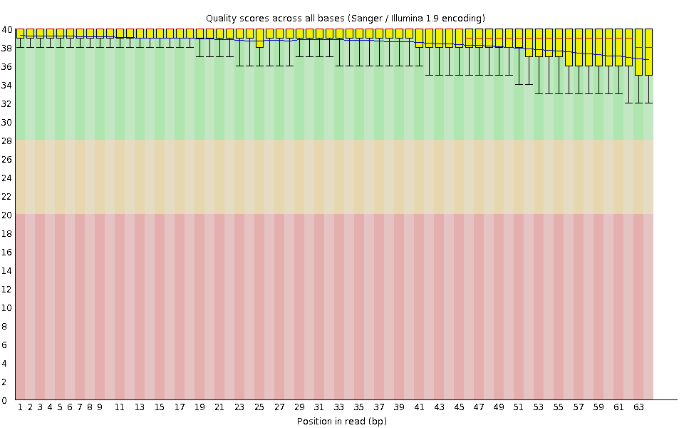
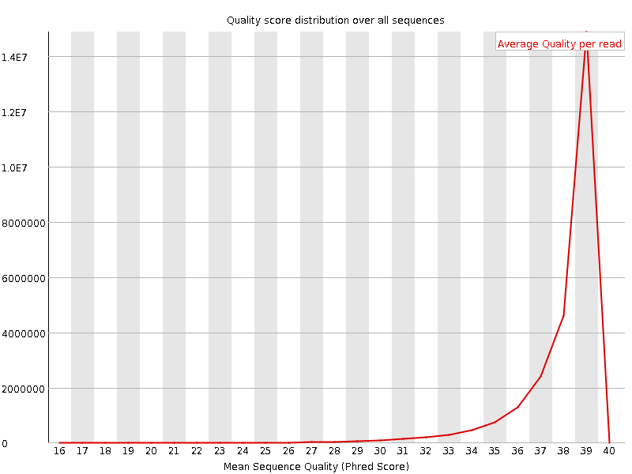
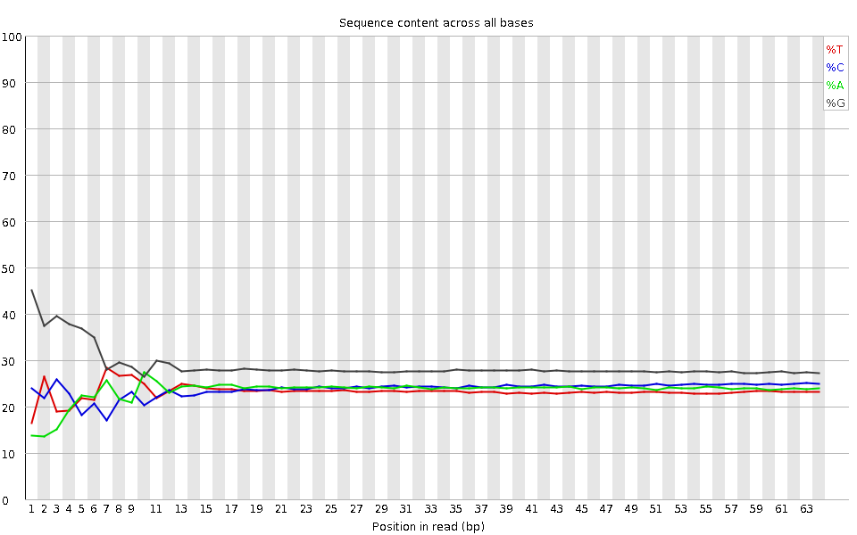
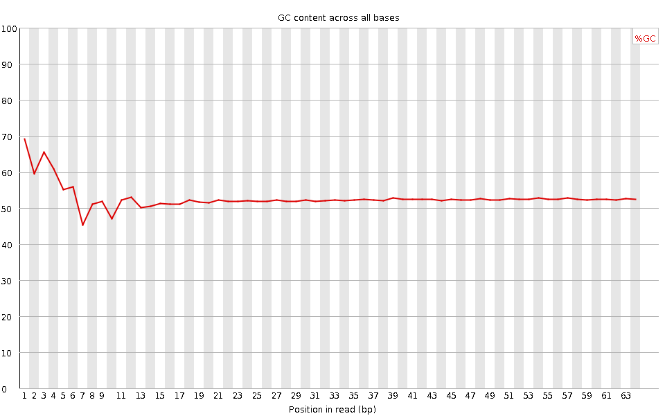
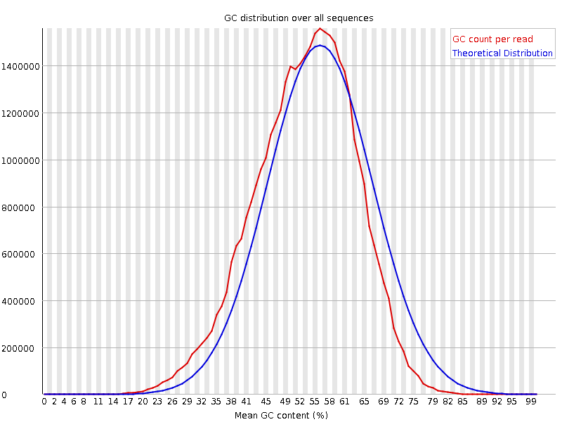
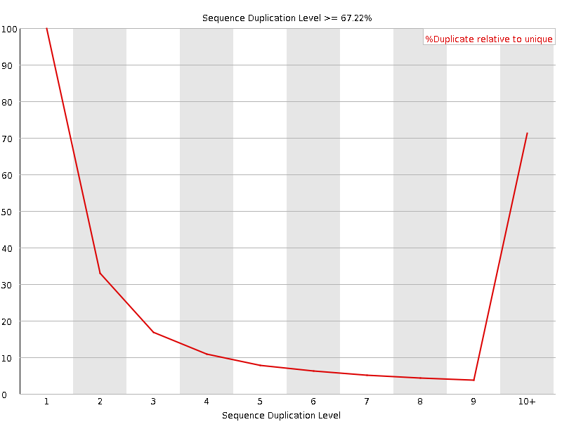
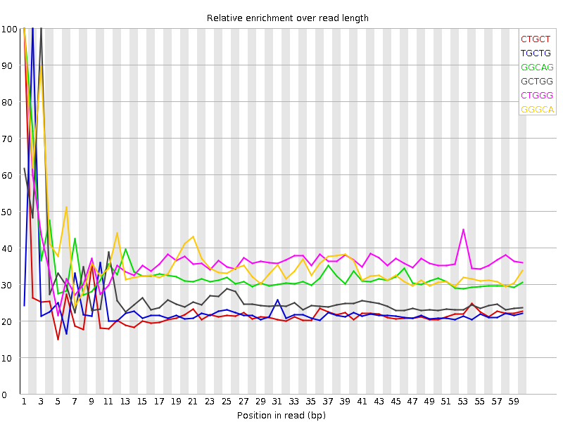

![[OK]](Icons/tick.png) Basic Statistics
Basic Statistics
| Measure | Value |
|---|---|
| Filename | SRR307905_pe_1.f.fastq |
| File type | Conventional base calls |
| Encoding | Sanger / Illumina 1.9 |
| Total Sequences | 25427541 |
| Filtered Sequences | 0 |
| Sequence length | 64 |
| %GC | 52 |
Per base sequence quality

Per sequence quality scores

![[FAIL]](Icons/error.png) Per base sequence content
Per base sequence content

Per base GC content

![[WARN]](Icons/warning.png) Per sequence GC content
Per sequence GC content

Per base N content

Sequence Length Distribution

Sequence Duplication Levels

Overrepresented sequences
No overrepresented sequences
Kmer Content

| Sequence | Count | Obs/Exp Overall | Obs/Exp Max | Max Obs/Exp Position |
|---|---|---|---|---|
| CTGCT | 3432745 | 2.4692473 | 10.794138 | 1 |
| TGCTG | 3850295 | 2.292465 | 9.8316 | 2 |
| GGCAG | 4565245 | 2.172192 | 6.480827 | 1 |
| GCTGG | 4429230 | 2.1314425 | 7.7897325 | 3 |
| CTGGG | 4218745 | 2.0301526 | 5.490839 | 1 |
| GGGCA | 3981210 | 1.8943022 | 5.213268 | 1 |
| TGGCA | 3168755 | 1.8654608 | 7.92314 | 5 |
| CTGGC | 3154175 | 1.8337729 | 7.920134 | 4 |
| TGGGG | 3971390 | 1.5818802 | 5.3336916 | 2 |
| GGCAC | 2738745 | 1.5743458 | 7.526695 | 6 |
| GTGGG | 3638335 | 1.4492182 | 7.392364 | 1 |
| GGGGA | 3654190 | 1.4391663 | 5.8959036 | 1 |
| TGTGT | 2358065 | 1.4378494 | 5.9513617 | 2 |
| GTGTG | 2730065 | 1.3454493 | 6.0061793 | 1 |
| GGGGG | 3846695 | 1.2383847 | 5.0814824 | 1 |
| TACAA | 1330445 | 1.172191 | 7.2115855 | 6 |
| GTACA | 1421045 | 1.023428 | 6.25899 | 5 |
| CGGGG | 2412675 | 0.9383848 | 5.2286315 | 1 |
| GTGTA | 1496820 | 0.902435 | 5.4836307 | 3 |
| TGTAC | 1218005 | 0.887176 | 6.1212707 | 4 |